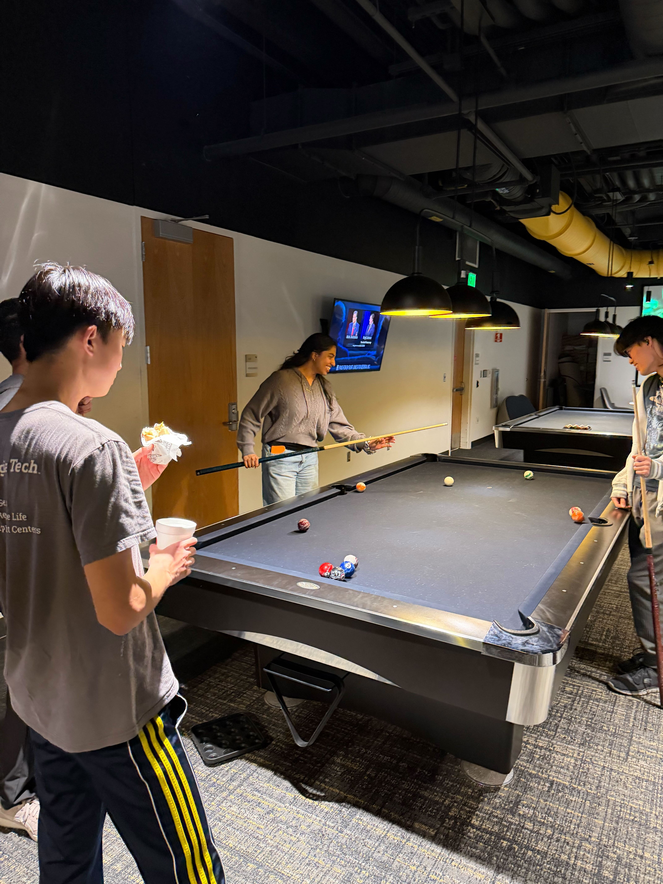

Social
Spring 2026 Bowling Social
We had our 2nd bowling social with a dash of competition between our members and discussed future project ideas while scoring strikes before Finals season! This time, we provided food for all attendees!